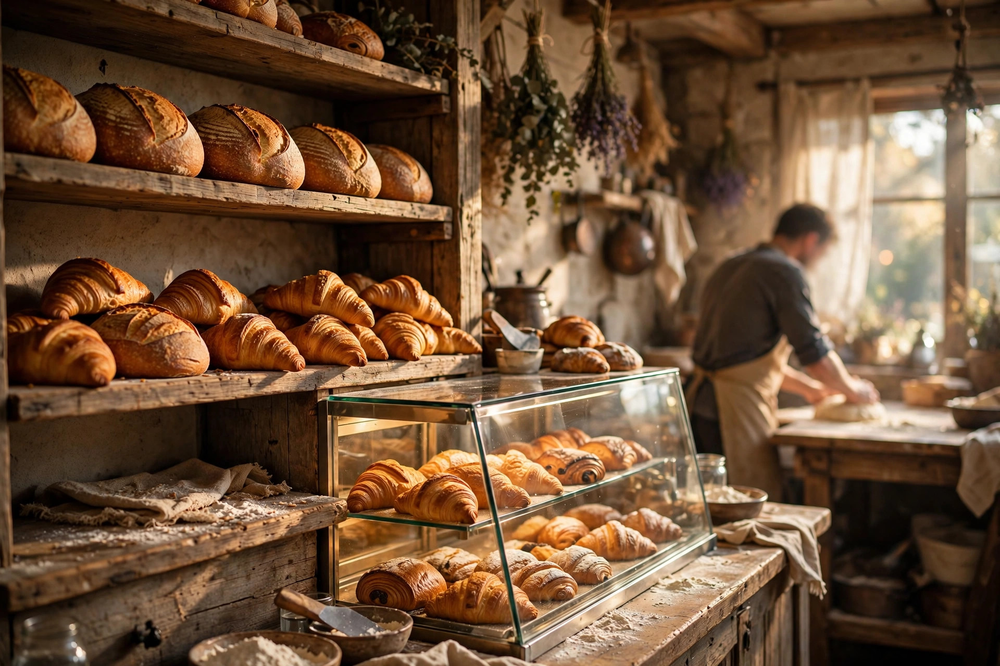
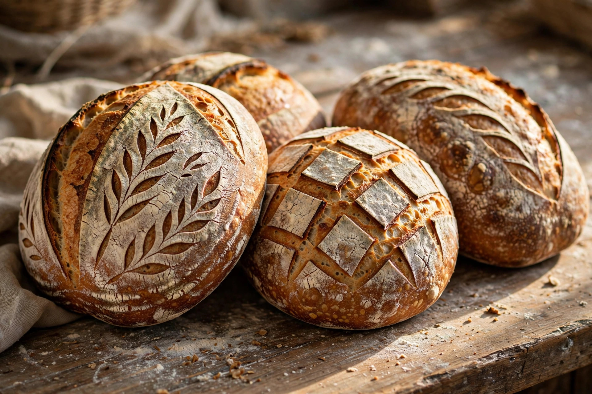

Sourdough & Breads
48-hour fermented loaves with a crackling crust and open crumb — the loaf Perth queues for.
from $9
Highgate's queue-famous artisan bakery — slow-fermented sourdough, flaky pastries and proper coffee, straight from the oven at 498 William Street.

Every loaf at Chu starts two days before you taste it. Flour, water, salt and time — fermented slowly for deep flavour and a crust you can hear.
It's why the queue forms down William Street before the shutters are fully up, and why Highgate keeps coming back.
A taste of the daily case — the full sample menu is on our menu page.
Small batches, long fermentation, honest ingredients. When it's gone, it's gone — that's the deal.
48-hour fermented loaves with a crackling crust and open crumb — the loaf Perth queues for.
from $9Butter-layered croissants, almond danishes and seasonal fruit tarts, laminated by hand.
from $5.50Proper espresso and silky flat whites to go with your pastry — or to linger over.
from $4.50Small batches and long fermentation mean the day starts long before the doors open.
Every loaf starts two days before you taste it — flour, water, salt and time, fermented for 48 hours.
Loaves and pastries come out of the oven in the morning, ready when we open at 7am, Tuesday to Sunday.
When the case is empty, we're done for the day — come early on weekends, or call ahead for whole loaves and pre-orders.
Everything is baked in small batches each morning, and popular loaves sell out. Call ahead for whole loaves and pre-orders — and come early on weekends for the full range.
| Monday | Closed |
| Tuesday – Friday | 7:00 AM – 4:00 PM |
| Saturday – Sunday | 7:00 AM – 4:00 PM |